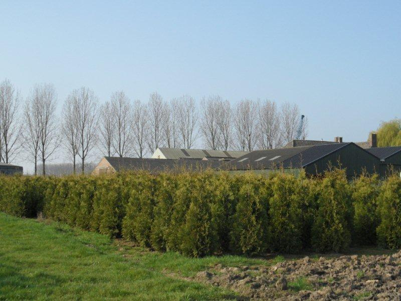

Coniferen te koop — 1,5 hectare met haagconiferen en solitairen
Schoenmakers heeft een boomkwekerij van 1,5 ha en levert met name haagconiferen en solitairen. Wij zijn leverancier van groothandel, bedrijven en particuliere tuinbezitters.
Door onze voorraad kunnen we snel en accuraat leveren. Dit tegen een scherpe prijs en goede kwaliteit.

Boomkwekerij
Levering uit voorraad
Concurrerende prijs